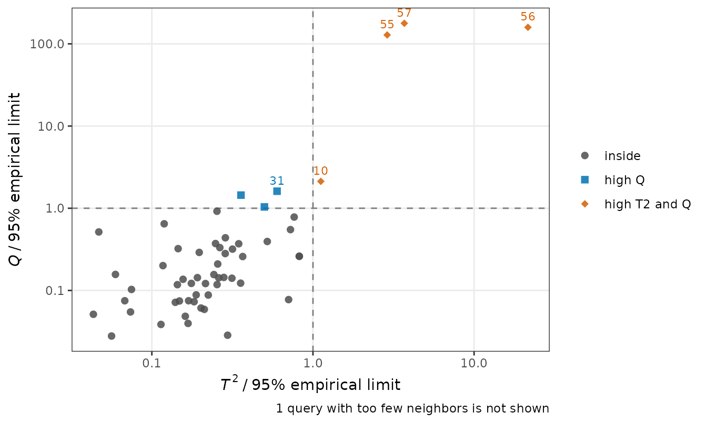
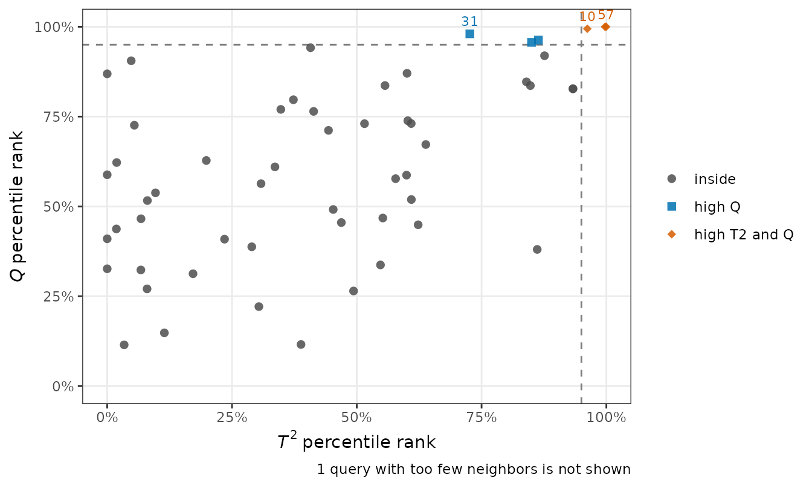
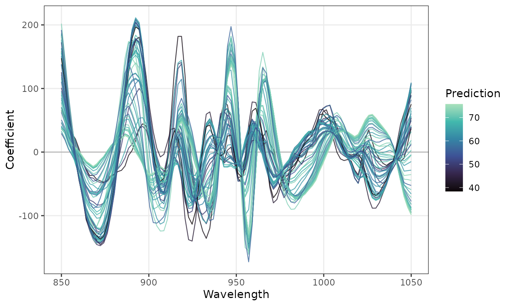
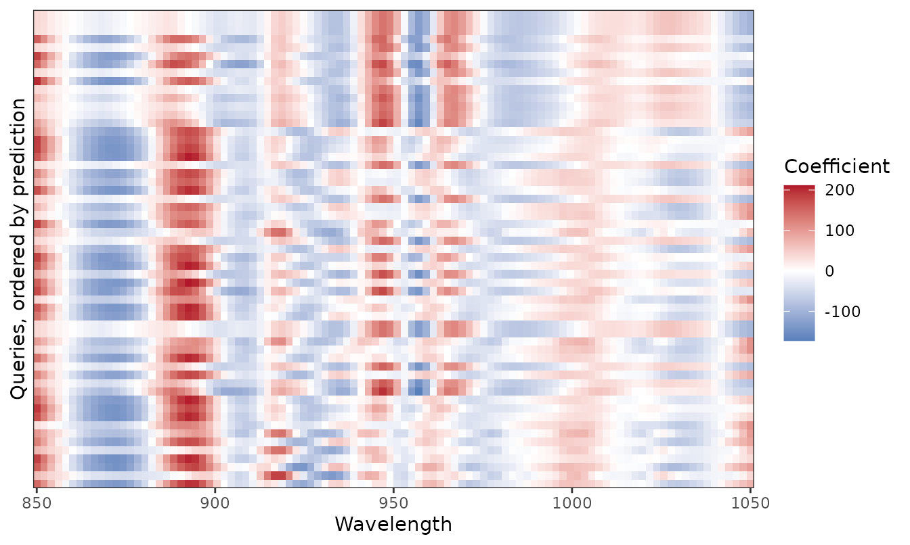
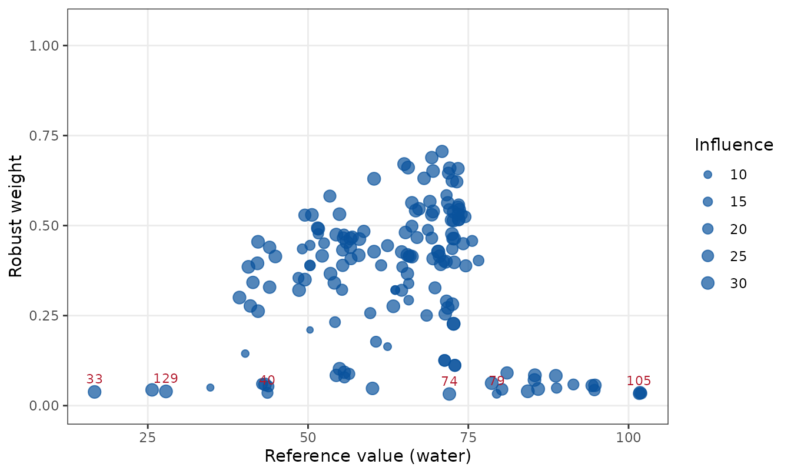
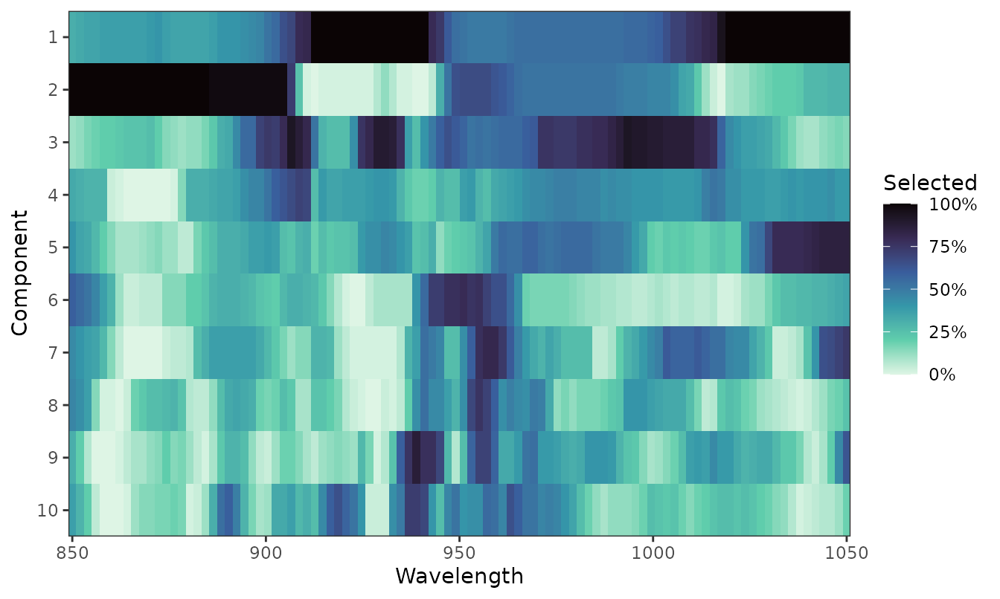
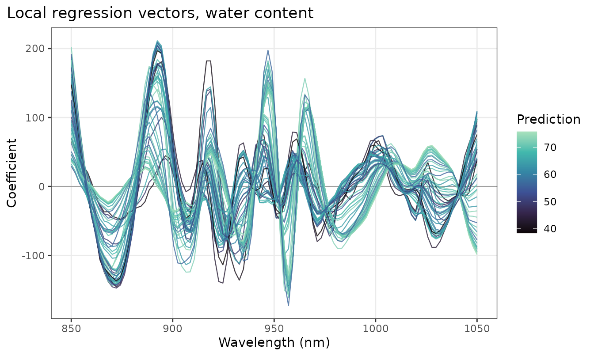

LW-PLS builds one local model per new sample, so the usual score and loading plots of a global PLS model have no direct equivalent. The diagnostics of lwpls answer the questions that matter when a calibration is used, for example on near-infrared spectra:
- Can I trust this prediction? Is the new spectrum within the applicability domain of its local model?
- Which bands drive the predictions, and how do they change across the range of the outcome?
- Which reference values are suspect (robust models)?
- Which wavelengths are selected (sparse models)?
lwpls_local() returns the local models of a set of new
samples with these diagnostics, and four plot functions draw them.
library(lwpls)
library(rsample)
data(meats, package = "modeldata")
meats <- meats[, !names(meats) %in% c("fat", "protein")]
set.seed(123)
meats_split <- initial_split(meats, prop = 0.75)
meats_train <- training(meats_split)
meats_test <- testing(meats_split)The meats data were recorded on a Tecator Infratec Food
and Feed Analyzer: 100 channels of near-infrared absorbance between 850
and 1050 nm. The predictor names (x_001, …,
x_100) only number the channels, so we give the wavelengths
explicitly; they become the x axis of the plots.
wavelengths <- seq(850, 1050, length.out = 100)
fit <- lwpls_fit(water ~ ., data = meats_train, num_comp = 10, localization = 0.5)Can I trust this prediction?
To show what an unusual spectrum looks like, we add three test spectra with an artificial sloping baseline, as could be caused by a drifting instrument or a different sample presentation:
drifted <- meats_test[1:3, ]
drifted[, 1:100] <- drifted[, 1:100] + 0.05 * seq(0, 1, length.out = 100)
new_spectra <- rbind(meats_test, drifted)
local <- lwpls_local(fit, new_spectra, wavelength = wavelengths)
local
#> LW-PLS local models
#>
#> Queries: 57
#> Components: 10
#> Reliability: 49 inside, 3 high Q, 4 high T2 and Q, 1 few neighbors (empirical limits, 95%)For each new spectrum, the reliability table gives the effective
number of training spectra in its local model (n_eff), and
its Hotelling \(T^2\) and \(Q\) statistics in that model. A large \(T^2\) means that the spectrum is extreme
within the variation that the local model describes; a large \(Q\) means that it contains variation that
the local model does not describe at all. By default, they are compared
with empirical limits: the 95% quantiles of the same
statistics for the training spectra of the local model, which make no
distributional assumption.
plot_reliability(local, log = TRUE)
The three drifted spectra (rows 55 to 57) are far beyond both limits,
with \(Q\) more than a hundred times
its limit, and their predictions are much less accurate than those of
the spectra within the limits (the "high T2 and Q" group
below):
rel <- local$reliability
rel$abs_error <- abs(rel$.pred - new_spectra$water)
aggregate(abs_error ~ status, data = rel, FUN = mean)
#> status abs_error
#> 1 inside 0.9908363
#> 2 high Q 1.0967050
#> 3 high T2 and Q 6.7109663
#> 4 few neighbors 0.2681041Spectra just beyond one limit, here those with a moderately high \(Q\), are predicted about as well as the others: a flag is a warning that calls for a check, not proof of a bad prediction. In routine use, the flagged spectra are the ones to check before reporting their predictions.
Theoretical limits and percentile ranks
lwpls_local() also computes the classical
theoretical limits (an \(F\) limit for \(T^2\) and the Box approximation for \(Q\), which assume normally distributed
scores and residuals) and the percentile rank of each
new spectrum among the training spectra of its local model. The two
kinds of limits agree on most spectra:
theoretical <- lwpls_local(
fit,
new_spectra,
wavelength = wavelengths,
limits = "theoretical"
)
table(
empirical = local$reliability$status,
theoretical = theoretical$reliability$status
)
#> theoretical
#> empirical inside high T2 high Q high T2 and Q few neighbors
#> inside 48 0 1 0 0
#> high T2 0 0 0 0 0
#> high Q 2 0 1 0 0
#> high T2 and Q 0 0 0 4 0
#> few neighbors 0 0 0 0 1The empirical limits are computed from the training spectra, which were used to fit the local models, so they are slightly conservative and can flag a few more spectra. The percentile ranks show the same comparison on a continuous scale, from 0% (the least extreme spectrum of the local model) to 100% (beyond all of them):
plot_reliability(local, reference = "percentile")
#> Warning: Removed 1 row containing missing values or values outside the scale range
#> (`geom_point()`).
#> Warning: Removed 1 row containing missing values or values outside the scale range
#> (`geom_text()`).
Which bands drive the predictions?
Each local model has its own regression vector. Plotted along the spectrum, one line per new sample colored by its prediction, they show the bands that the local models use and how they change from lean to fat meat:
plot_coefficients(local)
The heatmap shows the same regression vectors with the new samples ordered by their prediction, which makes the changes across the range of water content easier to follow:
plot_coefficients(local, style = "heatmap")
The variable importance in projection (VIP) of the local models is
shown with type = "vip".
Which reference values are suspect?
Robust local models (robust = TRUE) give small weights
to the training samples that do not fit their neighbors. Averaged over
the local models in which they take part, these weights point to wrong
reference values. Here, we replace 20% of the training water contents by
wrong values:
set.seed(1)
bad <- sample(nrow(meats_train), round(0.2 * nrow(meats_train)))
contaminated <- meats_train
contaminated$water[bad] <- contaminated$water[bad] +
sample(c(-1, 1), length(bad), replace = TRUE) * runif(length(bad), 15, 30)
robust_fit <- lwpls_fit(
water ~ .,
data = contaminated,
num_comp = 6,
localization = 2,
robust = TRUE
)
robust_local <- lwpls_local(robust_fit, meats_test, wavelength = wavelengths)
plot_robust_weights(robust_local, labels = 8)
The point size shows the influence of each training sample, the sum of its similarity weights over the new samples. Here, the samples with the lowest weights are exactly the ones whose reference values were changed:
Which wavelengths are selected?
Sparse local models (sparsity > 0) select wavelengths
by component. On smooth near-infrared spectra, successive components
select different bands, so that the model as a whole uses most of the
wavelengths; the selection of each component is then the informative
view:
sparse_fit <- lwpls_fit(
water ~ .,
data = meats_train,
num_comp = 10,
localization = 0.5,
sparsity = 0.4
)
sparse_local <- lwpls_local(sparse_fit, meats_test, wavelength = wavelengths)
plot_selection(sparse_local)
plot_selection(by = "model") shows instead the fraction
of local models that use each wavelength in any component, with the mean
spectrum for reference.
Customizing the plots
All the plots are ggplot2 objects, so they can be modified with the usual ggplot2 functions and saved at the size and resolution required by a journal:
plot_coefficients(local, axis_label = "Wavelength (nm)") +
ggplot2::labs(title = "Local regression vectors, water content")
ggplot2::ggsave("coefficients.pdf", width = 17, height = 10, units = "cm")The plots are also available through
ggplot2::autoplot(), for example
autoplot(local, type = "coefficients"). For wavenumber
axes, which are usually drawn in decreasing order, use
reverse = TRUE.
References
- Nomikos, P. and MacGregor, J. F. (1995). Multivariate SPC charts for monitoring batch processes. Technometrics, 37(1), 41–59.
- Serneels, S., Croux, C., Filzmoser, P. and Van Espen, P. J. (2005). Partial robust M-regression. Chemometrics and Intelligent Laboratory Systems, 79(1–2), 55–64.
- Hoffmann, I., Serneels, S., Filzmoser, P. and Croux, C. (2015). Sparse partial robust M regression. Chemometrics and Intelligent Laboratory Systems, 149, 50–59.